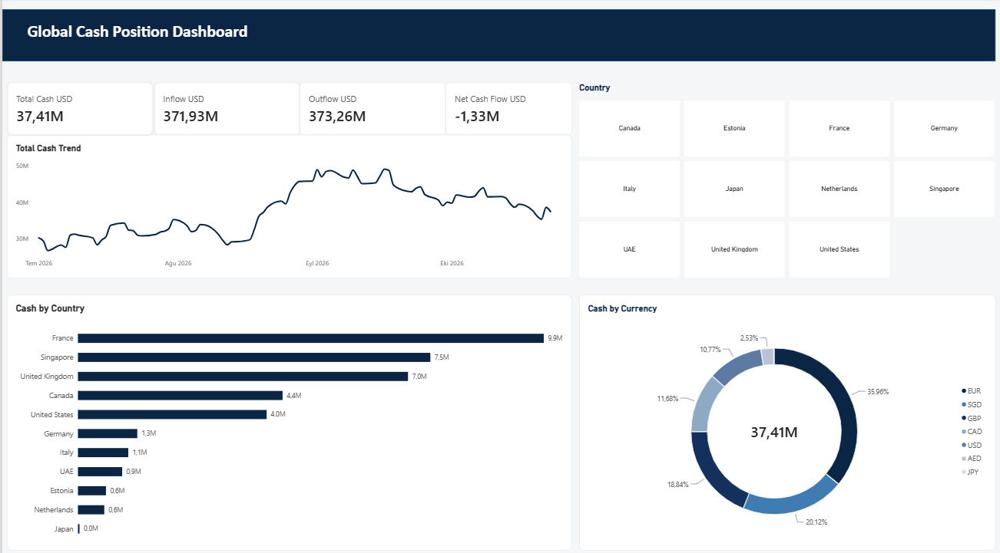
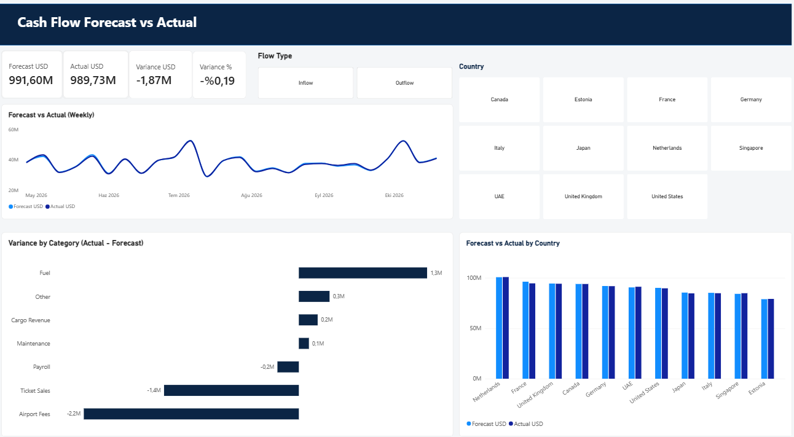
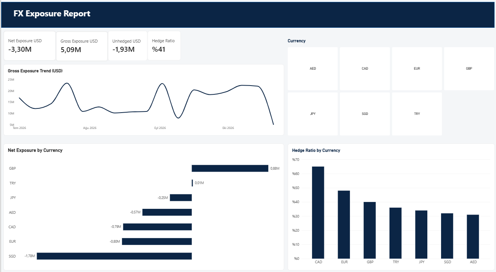

Celil Burak Yılmaz
I work on corporate treasury and liquidity operations, and study development economics. I build financial reporting tools with Power BI, SQL and Python.
Kurumsal hazine ve likidite operasyonlarında çalışıyor, kalkınma iktisadı üzerine çalışmalar yapıyorum. Power BI, SQL ve Python ile finansal raporlama araçları geliştiriyorum.
AboutHakkımda
WorkÇalışma
Working in international treasury and liquidity management at a global airline. Background in bank risk management (data management, reporting and market risk).
Global bir havayolu şirketinde uluslararası hazine ve likidite yönetiminde çalışıyorum. Daha önce bankada risk yönetiminde (veri yönetimi, raporlama ve piyasa riski) görev yaptım.
EducationEğitim
M.A. in Development Economics, Marmara University (in progress). B.A. in Economics, Istanbul University (Honors).
Marmara Üniversitesi Kalkınma İktisadı yüksek lisans (devam ediyor). İstanbul Üniversitesi İktisat lisans (onur derecesi).
Research interestsAraştırma ilgi alanları
Global monetary policy spillovers, capital flows and FDI in emerging economies, external financing vulnerability.
Küresel para politikası yayılımları, gelişmekte olan ekonomilerde sermaye akımları ve DYY, dış finansman kırılganlığı.
ToolkitAraçlar
ProjectsProjeler

Global Cash Position DashboardGlobal Nakit Pozisyonu Panosu
Consolidated view of cash across 11 countries and 7 currencies, so a treasury team can see where liquidity sits at a glance.
11 ülke ve 7 para birimindeki nakdin konsolide görünümü. Hazine ekibi likiditenin nerede durduğunu tek bakışta görür.
- KPIs: total cash, inflow, outflow, net cash flow
- Cash trend over time
- Cash by country and by currency
- Country slicer filters every visual
- KPI kartları: toplam nakit, giriş, çıkış, net nakit akışı
- Zaman içinde nakit trendi
- Ülke ve para birimi bazında nakit
- Ülke filtresi tüm görselleri günceller

Cash Flow Forecast vs ActualNakit Akışı: Tahmin ve Gerçekleşen
Compares forecast and actual cash flows and shows where the gaps come from, by category and by country.
Tahmini ve gerçekleşen nakit akışlarını karşılaştırır, farkların hangi kategori ve ülkeden geldiğini gösterir.
- KPIs: forecast, actual, variance (USD and %)
- Weekly forecast vs actual trend
- Variance by category (fuel, payroll, ticket sales, airport fees and more)
- Filters for flow type (inflow/outflow) and country
- KPI kartları: tahmin, gerçekleşen, sapma (USD ve %)
- Haftalık tahmin ve gerçekleşen trendi
- Kategori bazında sapma (yakıt, maaş, bilet satışı, havalimanı ücretleri vb.)
- Akış tipi (giriş/çıkış) ve ülke filtreleri

FX Exposure ReportKur Riski Pozisyonu Raporu
Tracks currency risk: how large the exposure is, how much is hedged and which currencies need attention.
Kur riskini izler: pozisyonun büyüklüğü, ne kadarının riskten korunduğu ve hangi para birimlerinin dikkat istediği.
- KPIs: net exposure, gross exposure, unhedged amount, hedge ratio
- Gross exposure trend
- Net exposure and hedge ratio by currency
- Currency slicer (AED, CAD, EUR, GBP, JPY, SGD, TRY)
- KPI kartları: net pozisyon, brüt pozisyon, korunmayan tutar, hedge oranı
- Brüt pozisyon trendi
- Para birimi bazında net pozisyon ve hedge oranı
- Para birimi filtresi (AED, CAD, EUR, GBP, JPY, SGD, TRY)
ResearchAraştırma
Comparative airline DCF valuationHavayolu şirketleri karşılaştırmalı DCF değerleme
A discounted cash flow valuation comparing listed airlines, built from public financial data and prepared for publication.
Borsada işlem gören havayollarını karşılaştıran, kamuya açık finansal verilerle hazırlanan ve yayına yönelik DCF değerleme çalışması.
Thesis researchTez araştırması
Asymmetric effects of US monetary policy shocks on FDI in emerging economies, 2008-2024.
ABD para politikası şoklarının gelişmekte olan ekonomilerde DYY üzerindeki asimetrik etkisi, 2008-2024.